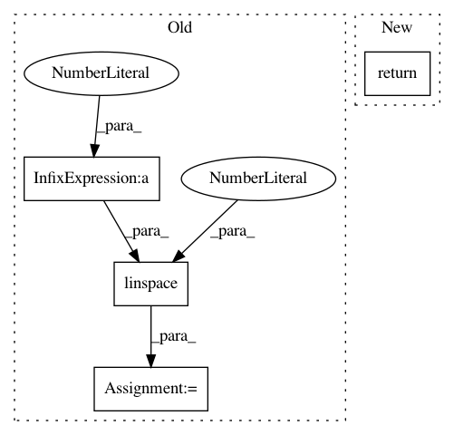

d381fb0787395076ecb8a3bd6984f52a16793fae,dataset/batch_image.py,ImagesBatch,_posterize_,#ImagesBatch#Any#Any#,788
Before Change
max_bin = 256 if np.issubdtype(dtype, np.integer) else 1.0001
max_intencity = 255 if np.issubdtype(dtype, np.integer) else 1.
bins = np.linspace(0, max_bin, colors_number+1)
color_indices = np.digitize(image, bins) - 1
colors = np.linspace(0, max_intencity, colors_number)
image = colors[color_indices]
return image
def _cutout_(self, image, origin, shape, color):
Fills given areas with color
After Change
self
return PIL.ImageOps.posterize(image, bits)
// image = image.copy()
//
// dtype = image.dtype
// max_bin = 256 if np.issubdtype(dtype, np.integer) else 1.0001
In pattern: SUPERPATTERN
Frequency: 3
Non-data size: 4
Instances
Project Name: analysiscenter/batchflow
Commit Name: d381fb0787395076ecb8a3bd6984f52a16793fae
Time: 2018-03-27
Author: g.ivanov@analysiscenter.ru
File Name: dataset/batch_image.py
Class Name: ImagesBatch
Method Name: _posterize_
Project Name: analysiscenter/batchflow
Commit Name: 49f4e83ae4323e032bdd232e466e59b4aeceb458
Time: 2018-03-28
Author: g.ivanov@analysiscenter.ru
File Name: dataset/batch_image.py
Class Name: ImagesBatch
Method Name: _posterize_
Project Name: enthought/chaco
Commit Name: 921f172b639a9cc81b9374f5fed9c31a8a396908
Time: 2009-02-09
Author: warren.weckesser@651a555e-23ca-0310-84fe-ca9f7c59d2ea
File Name: enthought/chaco/scales/scales.py
Class Name: LogScale
Method Name: ticks